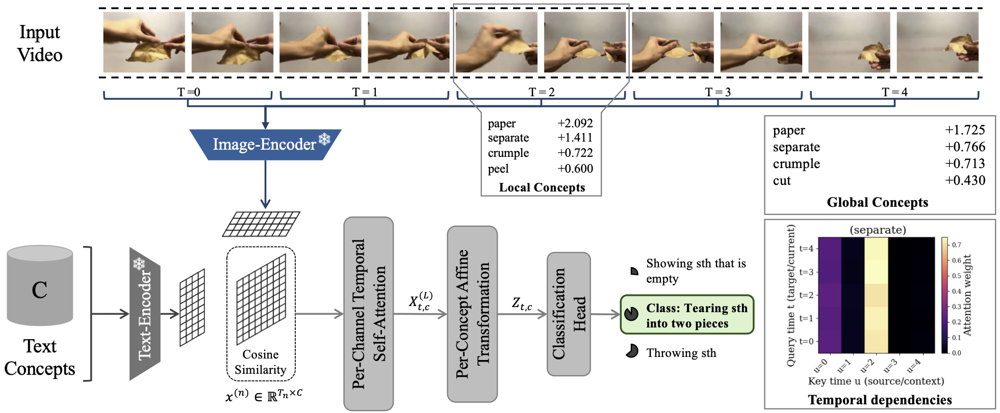

Concept Visualization: MoTIF identifies and highlights key temporal concepts in video sequences.
Abstract
Conceptual models such as Concept Bottleneck Models (CBMs) have driven substantial progress in improving interpretability for image classification by leveraging human-interpretable concepts. However, extending these models from static images to sequences of images, such as video data, introduces a significant challenge due to the temporal dependencies inherent in videos, which are essential for capturing actions and events In this work, we introduce MoTIF (Moving Temporal Interpretable Framework), an architectural design inspired by a transformer that adapts the concept bottleneck framework for video classification and handles sequences of arbitrary length. Within the video domain, concepts refer to semantic entities such as objects, attributes, or higher-level components (e.g., "bow," "mount," "shoot") that reoccur across time—forming motifs collectively describing and explaining actions. Our design explicitly enables three complementary perspectives: global concept importance across the entire video, local concept relevance within specific windows, and temporal dependencies of a concept over time. Our results demonstrate that the concept-based modeling paradigm can be effectively transferred to video data, enabling a better understanding of concept contributions in temporal contexts while maintaining competitive performance.
Method
Contributions
CBM Framework for Video
MoTIF supports arbitrary-length inputs and integrates seamlessly with vision–language backbones
Three Complementary Explanation Modes
MoTIF is the first method to enable:
- Global concept relevance via log-sum-exp (LSE) pooling
- Localized temporal explanations using windowed concept attributions
- Attention-based temporal maps that visualize how a concept channel distributes its focus across time
Per-Channel Temporal Self-Attention
Preserves concept independence within transformer blocks and models temporal dynamics on a per-concept basis
Architecture

Video and concept embeddings
Frames are embedded with an image–text aligned backbone (e.g., CLIP) into a shared space. For each temporal window we use either a representative frame or a video‑adapted CLIP embedding. Concept activations X (T×C) are obtained as cosine similarities to a bank of human‑interpretable actions and objects. The concept bank is built from natural‑language descriptions; a large language model proposes candidate concepts, and we adopt the resulting set directly.
Per‑channel temporal self‑attention (diagonal)
Standard transformers mix channels in Q/K/V projections, which obscures concept attribution. MoTIF keeps concepts independent using depthwise 1×1 projections so each concept owns its Q, K and V. Attention is computed within a concept across time, yielding a T×T weight map per concept and refined activations.
Per‑concept affine transformation
Refined activations are scaled and shifted by concept‑specific parameters and passed through Softplus to keep activations non‑negative. A lightweight depthwise two‑layer feed‑forward block (GELU, dropout) is applied.
Complexity
Diagonal attention removes channel‑mixing cost (from O(C²T) to O(CT)) but computes a T×T map per concept, giving O(CT²). This trades efficiency for strict concept isolation compared with standard multi‑head attention O(HT²) with H ≪ C.
Results
Performance Comparison
Table below provides a comparison including accuracies from non-interpretable baselines. We compare against TSM, No Frame Left Behind, and VideoMAE V2, all of which report results on our selected datasets. As expected, these models generally outperform our interpretable variant. However, on Breakfast, we exceeded the performance of two of the baselines that report scores. Importantly, our objective is not to surpass state-of-the-art benchmarks, but to demonstrate a novel MoTIF framework for video data that provides unique interpretability insights.
| Method | Breakfast | HMDB51 | UCF101 | SSv2 |
|---|---|---|---|---|
| Zero-shot | ||||
| CLIP-RN/50 | 18.6 ± 2.6 | 29.8 ± 0.5 | 57.2 ± 0.9 | 0.8 |
| CLIP-ViT-B/32 | 23.2 ± 2.9 | 38.1 ± 0.3 | 59.9 ± 0.4 | 0.9 |
| CLIP-ViT-L/14 | 31.1 ± 4.7 | 45.7 ± 0.1 | 70.6 ± 0.5 | 0.7 |
| SigLIP-L/14 | 23.6 ± 5.0 | 49.3 ± 0.8 | 80.4 ± 1.4 | 1.3 |
| PE-L/14 | 41.4 ± 7.0 | 56.7 ± 0.6 | 74.6 ± 0.9 | 2.2 |
| Linear Probe | ||||
| CLIP-RN/50 | 36.5 ± 9.0 | 59.3 ± 0.8 | 80.0 ± 0.7 | 13.7 |
| CLIP-ViT-B/32 | 37.2 ± 9.1 | 61.6 ± 1.6 | 82.8 ± 0.7 | 15.2 |
| CLIP-ViT-L/14 | 55.3 ± 10.2 | 68.4 ± 0.5 | 90.0 ± 1.1 | 18.1 |
| SigLIP-L/14 | 57.1 ± 10.9 | 65.0 ± 2.1 | 90.5 ± 0.5 | 19.6 |
| PE-L/14 | 72.9 ± 10.3 | 74.4 ± 0.6 | 94.5 ± 0.6 | 25.5 |
| MoTIF (Ours) | ||||
| MoTIF (RN/50) | 52.8 ± 6.9 | 62.8 ± 1.1 | 82.8 ± 0.6 | 16.0 |
| MoTIF (ViT-B/32) | 53.4 ± 6.9 | 65.3 ± 1.8 | 85.6 ± 1.2 | 17.5 |
| MoTIF (ViT-L/14) | 69.3 ± 6.2 | 73.3 ± 1.0 | 93.2 ± 0.7 | 20.4 |
| MoTIF (SigLIP-L/14) | 73.5 ± 8.6 | 73.2 ± 2.4 | 94.0 ± 0.8 | 22.4 |
| MoTIF (PE-L/14) | 83.6 ± 6.5 | 79.6 ± 0.3 | 95.4 ± 0.7 | 30.0 |
| Existing Video Models | ||||
| TSM | 59.1¹ | 73.5 | 95.9 | 61.7 |
| No frame left behind | 62.0¹ | 73.4¹ | 96.4¹ | 62.7¹ |
| VideoMAE V2 | -- | 88.1 | 99.6 | 76.8 |
¹ Results from literature. Bold indicates best performance, underlined indicates second best.
Citation
Tbd.